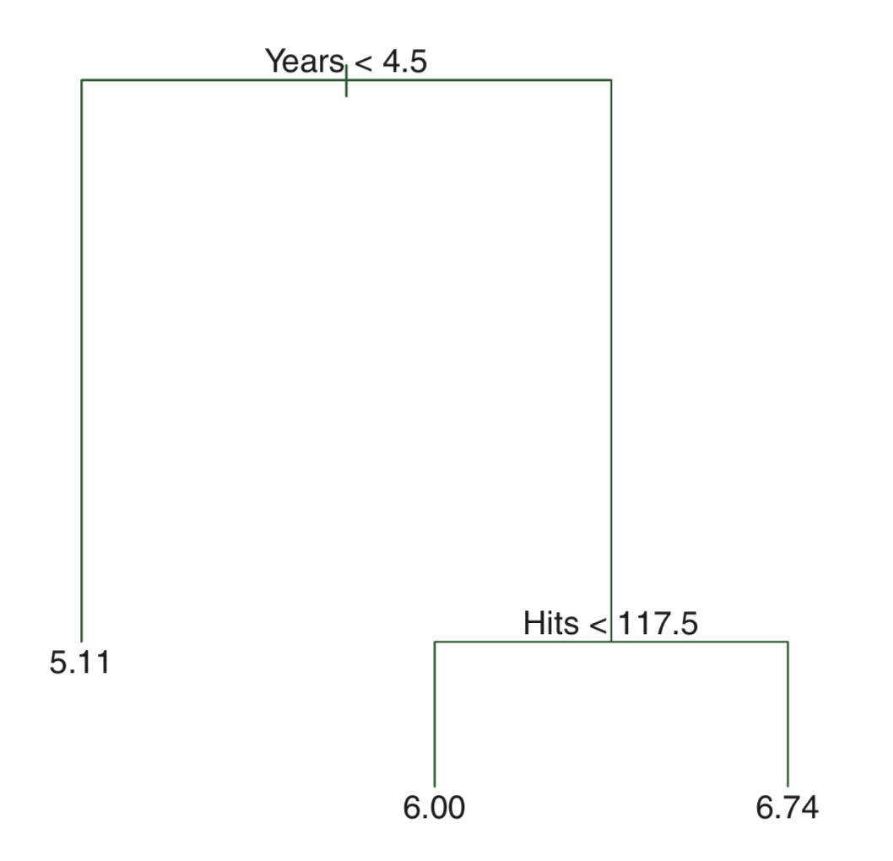
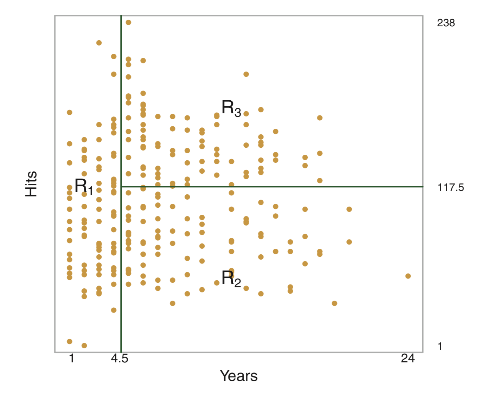
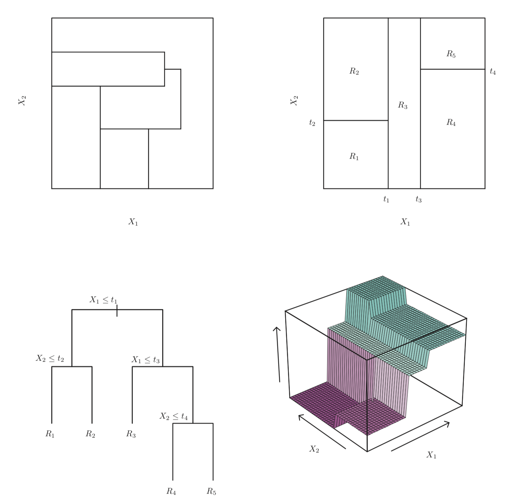
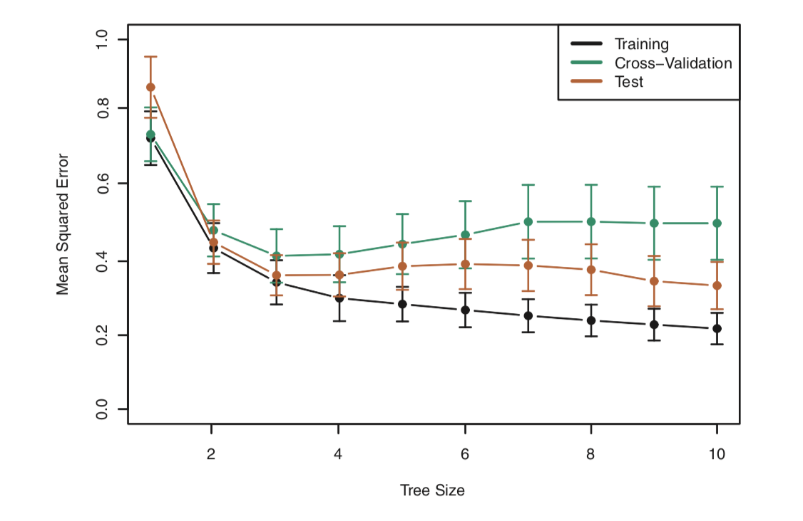
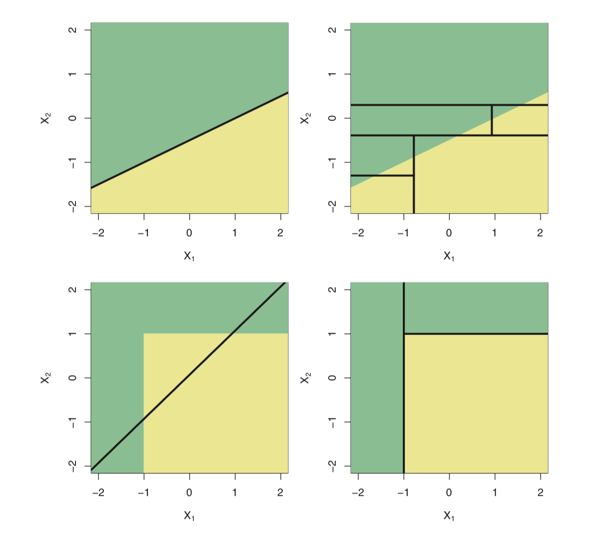
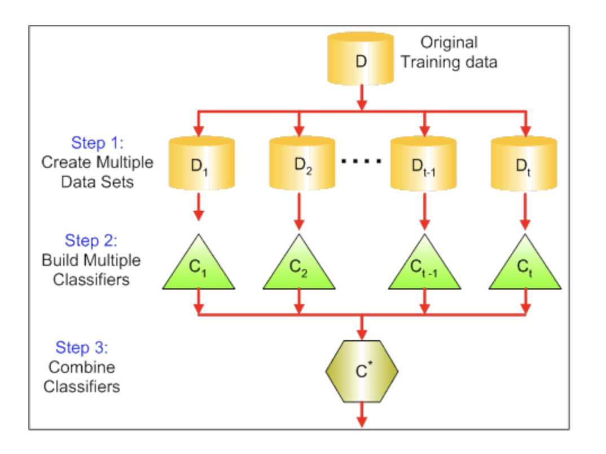
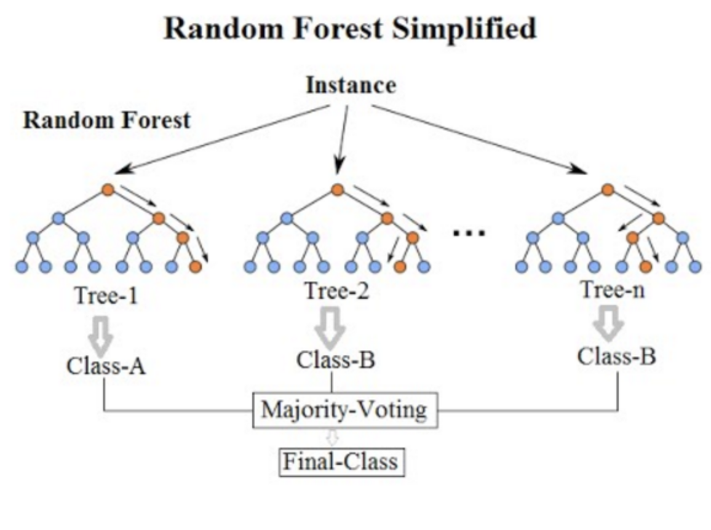
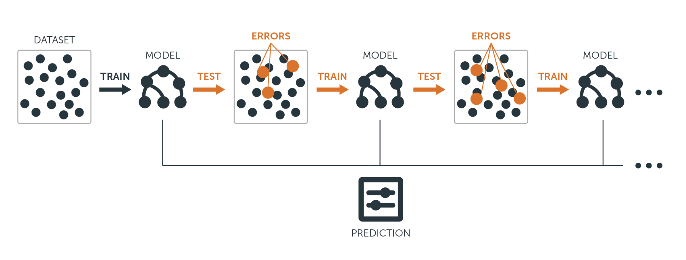

library(MASS)
head(Boston)Random forest & Gradient boosting
의사결정나무
의사결정나무는 설명변수 공간을 여러 구역으로 나누고, 각 구역에 속한 훈련자료들의 평균(회귀) 또는 최빈값(분류)으로 예측하는 방법이다.
<메이저리그 타자의 연봉을 예측하는 문제>


회귀 문제에서는 RSS(Residual Sum of Squares)를 최소화하는 구역 분할을 찾는 것이 목적이다.
\[\sum_{j=1}^J\sum_{i\in R_j}(y_i - \hat{y}_{R_j})^2\]
Rj: jth 설명변수 공간
\(\hat{y}_{R_j}\): jth 설명변수 공간에 속한 훈련 관측치 반응변수들의 평균값
분할은 보통 top-down 방식의 반복적 이분 분할 (recursive binary splitting)을 이용한다.

단점
탐욕적(greedy): 각 단계에서만 최적 분할을 선택 → 전체적으로 최적 구조를 보장하지 못함
과적합(overfitting)에 취약: 트리가 너무 복잡해져 새로운 데이터에는 성능이 떨어질 수 있음
가지치기
과적합 문제 해결을 위해 cost complexity pruning을 사용한다.
cost complexity pruning (weakest link pruning)
\[\sum_{j=1}^J\sum_{i\in R_j}(y_i - \hat{y}_{R_j})^2 + \alpha T\]
T: subtree T의 number of terminal nodes
\(\alpha\): tuning parameter
\(\alpha\)가 높으면, 더 단순한 트리 선택
즉, tuning parameter \(\alpha\) 는 서브트리의 복잡도와 훈련자료에 대한 적합 사이의 trade-off 를 제어함.
k-fold CV 을 이용해서 검정오차를 \(\alpha\)의함수로 평가하고,평균 검정오차를최소로하는 \(\alpha\)를 선택

Linear model vs. Tree-based model

분류 오차
분류 문제에서는 오류율 \(E = 1 - \max(\hat{p}_{mk})\) 대신, node purity에 민감한 지표 사용:
- 지니 지수(Gini index)
- 교차엔트로피(cross-entropy)
Gini index
\[G = \sum_{k=1}^{K} \hat{p}_{mk}(1-\hat{p}_{mk})\]
Cross-entropy
\[D = - \sum_{k=1}^{K} \hat{p}_{mk}log(\hat{p}_{mk})\]
Bagging
배깅(bagging)은 bootstrap aggregation 의 약자. 여러 bootstrap 샘플로 학습한 모델을 평균/다수결로 결합해 분산을 줄인다.
\[\hat{f}_{bag}(x) = \frac{1}{B}\sum_{b=1}^{B}\hat{f}_b(x)\]

OOB(Out-of-Bag) 오차: 각 데이터가 포함되지 않은 트리들로 예측해 검증오차 추정
변수 중요도(Variable importance): 특정 변수 분할이 가져온 오차 감소량의 평균
랜덤 포레스트(Random Forest)
Bagging의 확장판.
각 split 시 전체 변수 p 중 무작위로 m개만 고려 (\(m \approx \sqrt{p}\))
트리 간 상관성을 줄여 더 낮은 분산 달성
참고 자료

부스팅(Boosting)
Bagging과 달리 bootstrap을 쓰지 않고, 전체 데이터를 순차적으로 학습하며 성능을 개선한다.
회귀 문제에서 Gradient boosting 알고리즘
- \(\hat{f}(x)=0\)이라하고, 훈련셋의 모든 i에대해 \(r_i = y_i\) 로 설정한다. (r: residuals)
- b = 1,2,…,B 에 대하여 다음을 반복한다.
- d개의 분할(d+1 터미널 노드)을 가진 트리 \(\hat{f}^b\)를 훈련자료 (X,r)에 적합한다.
- 새로운 트리의 수축 버전(수축 parameter \(\lambda\) 를 곱한)을 더하여 \(\hat{f}(x)\) 를 업데이트한다.
\[\hat{f}(x) \leftarrow \hat{f}(x) + \lambda \hat{f}^b(x)\]
- 잔차들을 업데이트한다.
\[r_i \leftarrow r_i - \lambda \hat{f}^b(x_i)\]
- 부스팅 모델을 출력한다.
\[\hat{f}(x) = \sum_{b=1}^B \lambda \hat{f}^b(x)\]
Boosting 의 tuning parameters
- B: number of trees
- \(\lambda\): 수축 파라미터 (학습 속도를 제어)
- d: number of split in each tree (boosting의 복잡도를 제어)

Lab.
실습 데이터셋: 보스턴 주택가격 데이터셋
- medv: median value of owner-occupied homes (단위: $1K)
필요한 패키지
library(caret) # classification and regression training
library(dplyr)
library(ggplot2)데이터 분할 훈련/테스트 세트 분리 (75:25 비율)
set.seed(1) # quasi-randomization for reproducible result
train_index = createDataPartition(1:nrow(Boston), p=0.75, list = FALSE) # return index vector
train_boston = Boston[train_index,]
test_boston = Boston[-train_index,]Random Forest
Tuning parameters
- ntree: number of trees (default, 500). - mtry: 분할 시 고려할 변수 개수 (보통 \(\sqrt{p}\))
모델학습
trctrl = trainControl(method = "repeatedcv", number = 10, repeats = 2) #
tunegrid = expand.grid(.mtry = c(2,7,13))
rf_model = train(medv ~ ., data = train_boston, method = "rf", trControl = trctrl, tuneGrid = tunegrid, importance = TRUE)
rf_model성능확인(훈련데이터)
plot(rf_model)성능확인(테스트데이터) 예측값 vs. 실제값 시각화
pred = predict(rf_model, newdata = test_boston)
df = data.frame(prd = pred, obs =test_boston$medv)
df %>%
ggplot(aes(obs, prd)) +
geom_point() +
geom_abline(intercept = 0, slope = 1)테스트 RMSE 계산
sqrt(mean((pred - test_boston$medv)^2))변수 중요도
rf_imp = varImp(rf_model, scale = F)
plot(rf_imp)Gradient boosting
모델학습
set.seed(9)
gbmGrid <- expand.grid(
interaction.depth = c(1,5,10), # 트리 깊이
n.trees = 50*(1:10), # 트리 개수
shrinkage = 0.1, # 학습률
n.minobsinnode = 10) # 최소노드크기
gbm_model = train(medv~., data = train_boston, trControl = trctrl, method = "gbm", tuneGrid = gbmGrid, verbose = F)
gbm_model성능 확인 (훈련 데이터)
plot(gbm_model)변수 중요도
summary(gbm_model, las = 1)성능 확인 (테스트 데이터)
gbm_pred = predict(gbm_model, newdata = test_boston)
sqrt(mean(gbm_pred - test_boston$medv)^2)모델 비교 (Random Forest vs. Gradient Boosting)
resamps = resamples(list(RF = rf_model,
GBM = gbm_model)) # 두 모델의 cross-validation 성능 결과(예: RMSE, R² 등)를 반환
summary(resamps)
bwplot(resamps) # Box-and-Whisker plot